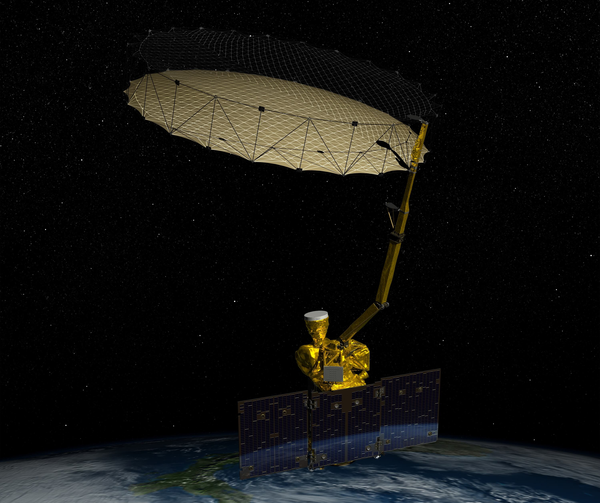
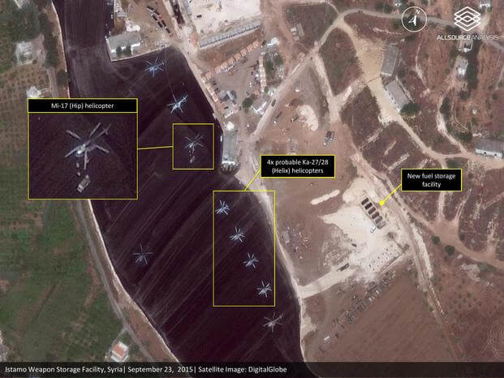

About This Project
Learn how this site is able to use NASA's public SMAP satellite data to detect and analyze military signal jamming activities worldwide, providing accessible insights into geopolitical events through OSINT.
What is NASA SMAP?
NASA's Soil Moisture Active Passive (SMAP) satellite was launched in 2015 as an Earth observation mission designed to measure soil moisture and freeze-thaw conditions across the planet. The satellite carries a radiometer that passively listens for natural radio emissions at 1.41 GHz (L-band) - a protected frequency where transmissions are prohibited under international treaties. SMAP orbits Earth every 98.5 minutes, collecting global measurements every 2-3 days to help scientists understand water cycles, improve weather forecasting, and monitor agricultural conditions.
While SMAP was built for peaceful climate research, its sensitive radio equipment has an unintended capability: detecting unauthorized high-power transmissions in the protected 1.4 GHz band. When military forces operate electronic warfare systems like jammers or other powerful radio equipment near this frequency, SMAP's instruments register dramatic spikes in "brightness temperature" - readings that are far too hot to be natural. This accidental side effect has transformed a climate satellite into an open-source intelligence tool, capable of revealing electromagnetic warfare activity across conflict zones in real-time.
Text generated by Claude Sonnet 4 (Anthropic) using this prompt.

How We Detect Signal Jamming
The detection method relies on measuring "brightness temperature" - essentially how much radio energy SMAP's radiometer picks up from Earth's surface at 1.41 GHz. Under normal conditions, natural sources like soil and vegetation emit relatively low levels of radio energy, typically registering between 270-310 Kelvin (K). Even hot desert areas rarely exceed 330K. However, when high-power military transmitters operate near this frequency band, they flood the area with artificial radio emissions that cause brightness temperature readings to spike dramatically - often reaching 360K, 370K, or even 375K.
These temperature spikes serve as clear signatures of unauthorized transmissions, since natural phenomena simply cannot produce such intense radio emissions at the protected 1.4 GHz frequency. The beauty of this detection method is its simplicity: SMAP doesn't need to decode signals or identify specific equipment types. It simply measures total radio energy in the band, making it nearly impossible for military forces to hide their electronic warfare activities. When jammers, spoofing systems, or other high-power radio equipment operate to disrupt enemy communications or navigation systems, they inadvertently announce their presence to anyone monitoring SMAP's publicly available data streams.
Text generated by Claude Sonnet 4 (Anthropic) using this prompt.
Interpreting Geopolitical Activity
Signal jamming detected by SMAP provides valuable insights into geopolitical tensions, but interpreting this data requires careful consideration of context and limitations. High-power radio emissions typically indicate electronic warfare activities such as disrupting enemy drone operations, blocking GPS navigation, interfering with satellite communications, or degrading radar systems. In active conflict zones like Ukraine, these jamming signatures often correlate with known military positions, front-line areas, and drone corridors, suggesting ongoing electronic battles to control the electromagnetic spectrum. However, the presence of jamming doesn't necessarily indicate immediate kinetic warfare - it may signal defensive posturing, training exercises, or preparations for potential operations.
It's important to understand that SMAP data alone cannot definitively prove military action or identify specific actors. Radio frequency interference can result from various sources including civilian radar installations, radio astronomy facilities, or even equipment malfunctions, though these typically produce different signature patterns. Additionally, some nations may conduct routine electronic warfare training or testing that appears similar to combat operations. The geographic clustering of signals, their persistence over time, and correlation with known geopolitical tensions help distinguish between genuine military activity and other sources. While this satellite data offers unprecedented visibility into the "invisible" electronic battlefield, it should be interpreted alongside other intelligence sources and geopolitical context rather than as standalone evidence of military operations.
Text generated by Claude Sonnet 4 (Anthropic) using this prompt.

Data Sources & Methodology
Our analysis uses NASA's publicly available SMAP L1B brightness temperature data, which is freely accessible through NASA's data archive centers without any special permissions or security clearances. The methodology is straightforward: we systematically scan global SMAP measurements and flag any locations where brightness temperature readings exceed 360K - well above the natural background levels of 270-330K. This threshold-based approach acts like a filter, automatically identifying areas with unusually high radio emissions that likely indicate jamming or other electronic warfare activities. The process requires basic data analysis tools and Python programming to download, process, and map the temperature anomalies, making it accessible to researchers and analysts worldwide.
However, the data comes with important limitations that affect both timeliness and coverage. SMAP orbits Earth every 98.5 minutes but only achieves global coverage every 2-3 days, meaning jamming activities could start and stop between satellite passes without being detected. The satellite's fixed orbital path also creates gaps in coverage, and its 36-kilometer resolution means smaller or mobile jamming systems might not register strong enough signals to cross the detection threshold. Weather conditions, terrain features, and the satellite's viewing angle can also influence measurement accuracy.
Additionally, since this is a passive detection method, we can only identify that high-power transmissions occurred - not their specific purpose, duration, or the equipment responsible. These constraints mean our dashboard provides valuable intelligence about electromagnetic warfare trends rather than real-time tactical information.
Text generated by Claude Sonnet 4 (Anthropic) using this prompt.